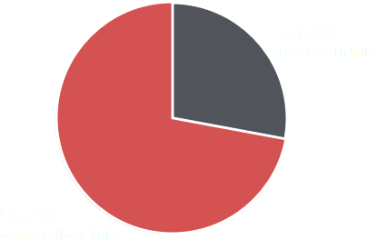

THE WESTGATE ATTACK
A STORY OF TERRORISM, TWITTER AND CITIZEN JOURNALISM
THE 80-HOUR TERRORIST ATTACK IN NAIROBI, KENYA, TOOK PLACE BETWEEN THE 21ST AND 24TH SEPTEMBER 2013.
THE SOMALI-BASED ISLAMIC TERRORIST GROUP AL-SHABAAB CLAIMED RESPONSIBILITY FOR THE ATTACK. THEY WERE ARMED WITH AK-47 ASSAULT RIFLES AND GRENADES.
THE UPMARKET WESTGATE SHOPPING MALL WAS A WELL-KNOWN CENTRE OF WESTERN EXPATRIATE LIFE IN NAIROBI. PREVIOUS WARNINGS SUGGESTED THE COMPLEX WAS IN DANGER OF A TERROR ATTACK.
THE ATTACK TOOK PLACE ON A BUSY SATURDAY MORNING, WITH APPROX. 1,000 PEOPLE INSIDE THE MALL. A LOCAL RADIO STATION WAS HOSTING A CHILDREN'S COOKING COMPETITION ON THE ROOFTOP. AS THE ATTACK BEGAN, THE WINNERS WERE ABOUT TO RECEIVE THEIR PRIZES.
AT LEAST 67 PEOPLE ARE KNOWN TO HAVE DIED, INCLUDING CHILDREN AND FOUR ATTACKERS. OVER 175 WERE INJURED.
THE PICTURE THAT HAS EMERGED IN THE AFTERMATH OF THE ATTACK IS THAT OF A WOEFULLY DISORGANISED AND INCOMPETENT RESPONSE FROM KENYAN AUTHORITIES. A CLASH OF EGOS LEFT A HANDFUL OF KENYAN OFFICERS AND ARMED VIGILANTES TO INITIALLY FIGHT HEAVILY ARMED MILITANTS, IN A BID TO RESCUE HUNDREDS OF SHOPPERS.
TWITTER WAS USED AS A MAIN COMMUNICATION CHANNEL BY ALL PARTICIPANTS, INCLUDING AL-SHABAAB AND THE VICTIMS. MAJOR NEWS WEBSITES, TV CHANNELS AND NEWSPAPERS AROUND THE WORLD USED TWITTER AS A PRIMARY SOURCE OF ATTACK-RELATED NEWS, REVEALING A NEW PATTERN OF MASS MEDIA INFORMATION COLLECTION.
MASS MEDIA COVERAGE
The media coverage timeline illustrates the most important elements of the event as depicted in mass media, arranged by day (vertically) and time (horizontally). Hover over any dot to see the related piece of news and its source.
VICTIMS BY NATIONALITY
KENYA: 48
UK: 4
INDIA: 3
CANADA: 2
FRANCE: 2
PERU: 1
SOUTH KOREA: 1
CHINA: 1
AUSTRALIA: 1
THE NETHERLANDS: 1
GHANA: 1
TRINIDAD AND TOBAGO: 1
SOUTH AFRICA: 1
THE ONLINE CONVERSATION
732,386 TWEETS
183,316 USERS
252,218 UNIQUE WORDS
4,843 UNIQUE HASHTAGS

This map displays the aggregated number of tweets arranged by geo-location and time. For a general overview, a histogram with the tweet frequency per hour is presented below the map. The histogram is arranged as a timeline; move the blue indicator to switch the time frame displayed on the map. Hover over the red dots in the histogram to see the most relevant mass
This bubble chart allows you to gain insights into the most shared tweets during an specific hour, selectable via the timeline below. Hover over a bubble to read the related tweet. To see the bigger picture with the aggregated amount of geolocated tweets for the selected time you can move back to the tweet-map.
Verified UsersNon-verified Users
AROUND 12:40, EYEWITNESSES INITIALLY REPORTED AN EXPLOSION. AT 13:05, MANY THOUGHT TO BE WITNESSING A ROBBERY. ONLY AT 13:15 DID THEY REALISE IT WAS A TERRORIST ATTACK.
FORMED IN 2006, THE STATED GOAL OF AL-SHABAAB (“THE YOUTH” IN ARABIC) IS TO OVERTHROW THE SOMALI GOVERNMENT AND ESTABLISH AN ISLAMIC EMIRATE WITH AN EXTREME VERSION OF SHARIA LAW. IT HAS COMMITTED A TOTAL OF NEARLY 550 TERRORIST ATTACKS ON THE AFRICAN CONTINENT, KILLING MORE THAN 1,600 AND WOUNDING OVER 2,100 PEOPLE.
AL-SHABAAB EXPANDED ITS ACTIVITY INTO NEIGHBOURING STATES SUCH AS KENYA AND ETHIOPIA IN RETALIATION FOR ONGOING MILITARY PRESENCE IN SOMALIA. WESTGATE WAS CHOSEN AS A SYMBOLIC TARGET TO GAIN INTERNATIONAL ATTENTION IN A REVENGE ACT AGAINST THE KENYAN GOVERNMENT.
This multiple line graph depicts the usage dynamics of the most common words used to describe the attackers in the online conversation. Check the box for the words you’re interested in to see the dynamics throughout the four days of the attack. For easier comparison among words, check multiple boxes at the same time. Additionally, you can hover over the word to hide the unrelated line graphs.
This directed graph depicts the 100 most influential users for the 4 days of the online conversation. Each bubble (node), represents an individual user. If a user mentions another one, a directed link is created between them. The more often a user mentions another, the stronger the link. The more mentions a user receives, the larger the node size. This graph can be used to find hubs and communities, and to categorize user accounts. Click on a node to reveal the username and amount of mentions/retweets they have received.
What is shown here that there is a strong core of users that mention each other and effectively 'make' the news.
Verified UsersNon-verified Users